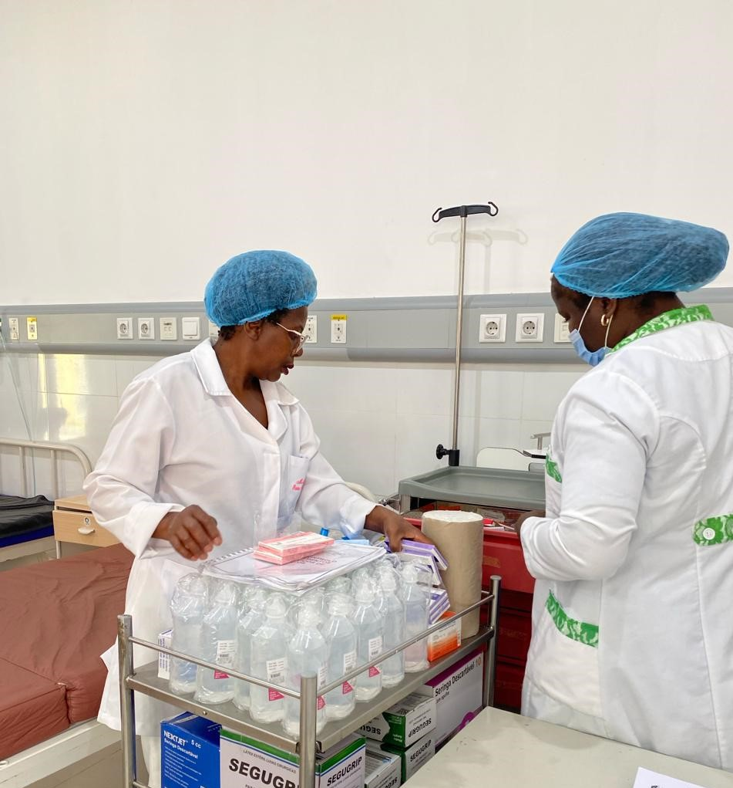

Cuidados Intensivos e Humanizados ao Recém-Nascido
O Serviço de Neonatologia da Maternidade Teresa Luami Jamba é uma unidade de alta complexidade dedicada ao suporte de vida e recuperação de recém-nascidos. Combinamos tecnologia avançada com uma assistência profundamente humanizada para garantir que os pequenos guerreiros tenham o melhor começo de vida possível no Luena.
As principais atividades realizadas incluem:
Cuidados Intensivos e Intermédios:
Monitorização contínua de recém-nascidos prematuros ou com patologias complexas, utilizando equipamentos de suporte vital de última geração.
Assistência ao Prematuro:
Protocolos especializados para o desenvolvimento de bebés de baixo peso, focando na estabilização térmica, respiratória e nutricional.
Método Canguru:
Promoção do contacto pele a pele entre pais e bebés, fortalecendo o vínculo afetivo e acelerando a recuperação e o ganho de peso.
Terapia Nutricional Neonatal:
Acompanhamento rigoroso da alimentação, priorizando o aleitamento materno e, quando necessário, nutrição parentérica específica.
Rastreios Neonatais:
Realização de exames fundamentais nos primeiros dias de vida para a deteção precoce de anomalias sensoriais ou metabólicas.
O nosso compromisso é oferecer esperança e segurança às famílias, lutando diariamente pela vida e pelo desenvolvimento saudável de cada recém-nascido.
Nossa Equipa Técnica

Profissionais qualificados e dedicados à saúde da mãe e do bebé na Maternidade Provincial do Moxico.